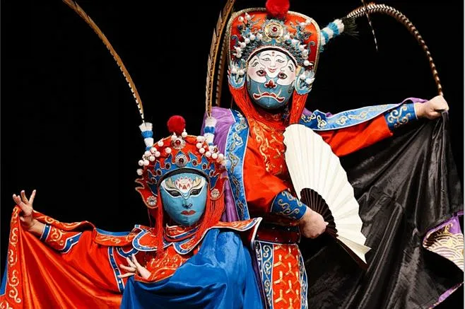
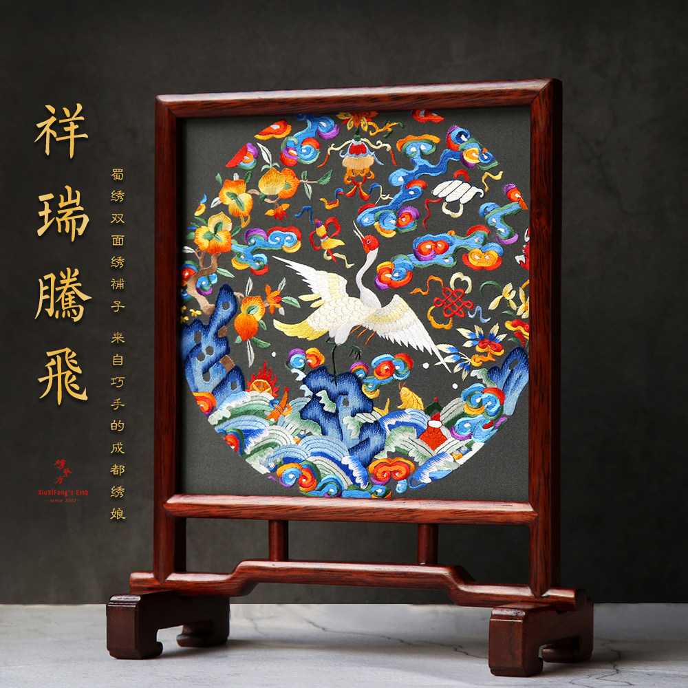
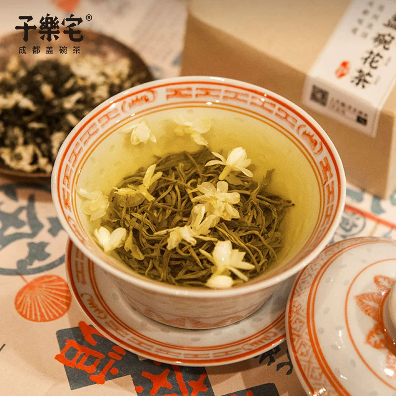
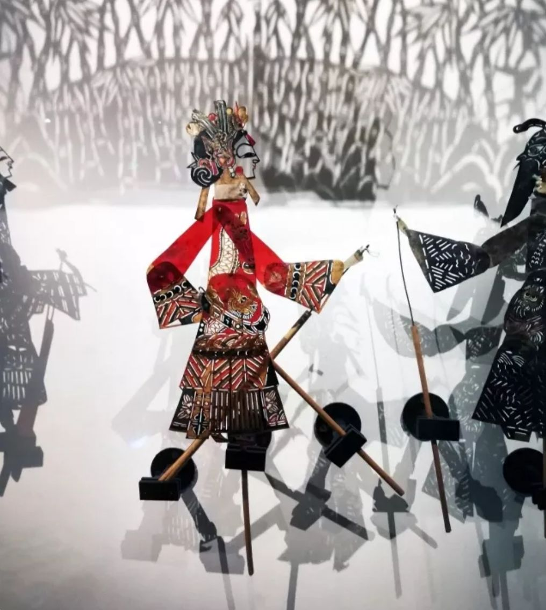
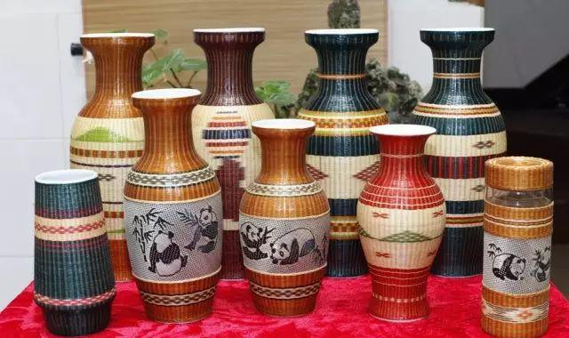
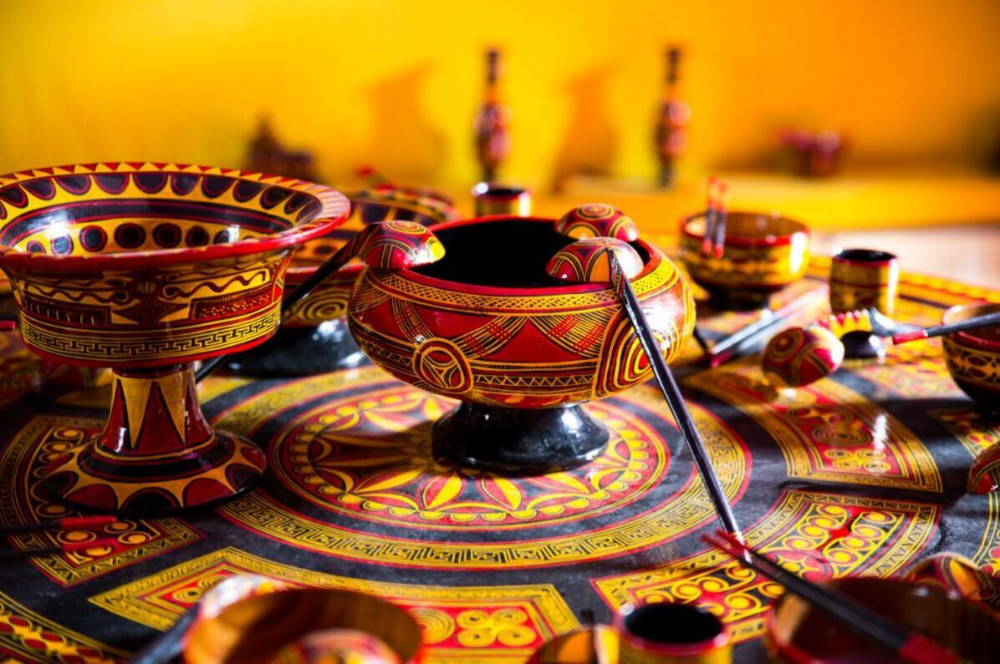

川剧变脸
一瞬之间，百面百相。川剧变脸以“抹脸、吹脸、扯脸”等绝技闻名世界，是巴蜀戏曲艺术的绝活，更承载着喜怒爱恨的东方哲学。
千年文脉，薪火相传，在指尖与声腔里触摸成都的灵魂

一瞬之间，百面百相。川剧变脸以“抹脸、吹脸、扯脸”等绝技闻名世界，是巴蜀戏曲艺术的绝活，更承载着喜怒爱恨的东方哲学。

“锦官城”因蜀锦而得名。五彩蚕丝在绣娘指尖游走，花鸟鱼虫栩栩如生，一针一线皆是千年织造技艺的绵延与匠心。

“盖为天，托为地，碗为人。”一杯盖碗茶，三花飘香，竹椅老茶馆里喝出成都人的闲适。茶盖轻刮，浮生半日，皆是慢时光。

光影之间的艺术，极具特色的非遗文化。一张素白幕布、几盏暖黄灯光，艺人指尖翻飞，万千悲欢便在光影间流转。

精巧的竹编器具，展现了老成都的市井生活。慈竹为骨、指尖为梭，篮筐篓席里编织着川西人家的烟火日常。

表面光泽如镜，色彩艳丽的传统工艺。髹漆、雕花、嵌银，千年底蕴凝于方寸之间，是蜀地工艺美学的极致呈现。